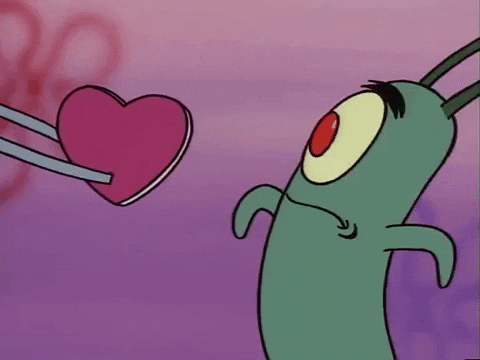
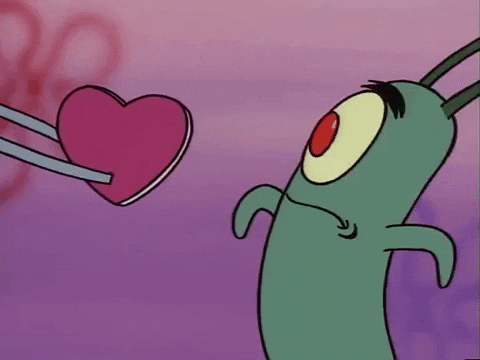

Carol Reis
Vida eu queria ter você aqui pra eu poder te dizer o quanto eu te amo e o quanto te quero ao meu lado.Você não faz ideia do quanto eu sinto sua falta,queria estar contigo para poder te abraçar e te beijar e poder te falar o quanto é gratificante estar com você.Todos os dias paro e penso como Deus me abençoou colocando uma pessoa tão especial como você em minha vida.Não tenho palavras pra descrever o tamanho do meu sentimento por você,pois até o infinito é pequeno perto do meu sentimento por ti.Quero te dizer que nunca te deixarei cair no esquecimento e que em todos os momentos penso em nós dois e como nosso amor vai se fortalacendo cada dia mais.Espero que esteja bem pois não sei conviver com a hipotese que esteja passando qualquer dificuldade aí.Saiba que estarei sempre ao seu lado em qualquer situação e que nada nem ninguém consiguirá nos separar.
É que eu não saberia acordar todo dia olhar pro meu aldo e não te setir,não me aceitaria me alhando no espelho sabendo que um dia te deixei partir,eu nao imagino como seja o mundo sem você por perto não posso seguir me desculpa por tudo que fiz se te fiz infeliz e nunca adimiti!
TE AMOH!
O nosso amor nunca vai passar o que Deus uniu ninguém pode separar.Vivo o dia a dia pra encontrar a solução que me traga paz e acalme o coração e que só por um segundo você esteja junto a mim no meu mundo!
- A distância pode impedir um abraço e um beijo mas não pode impedir o amor que sinto por você.Te Amo Luan!

- Quando você fica ao lado de uma pessoa e ela mesmo em silêncio te faz bem,quando você fecha os olhos e no pensamento está fotografado a imagem desse alguém e quando estiver em um dia triste basta um sorisso dela pra você ficar feliz.Isso é Amor,ta rolando Amor!!!
 

Versões anteriores do site:
versão 1
versão 2